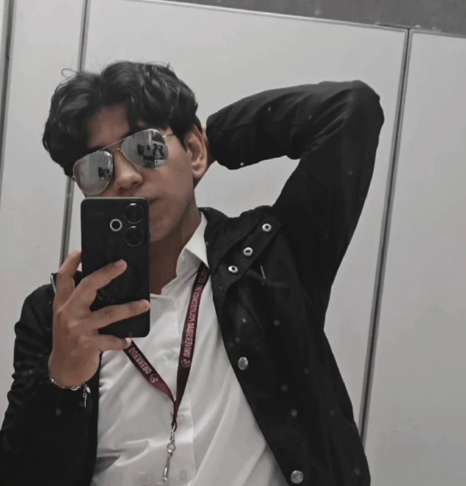
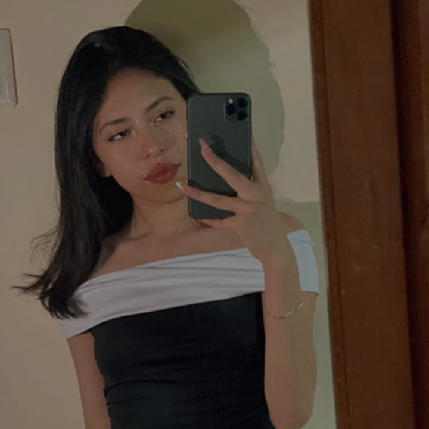

Se dedica a dirigir y coordinar todas las actividades de la empresa, tomando decisiones importantes y supervisando el cumplimiento de todos los objetivos, y sobre todo el representante a clientes de la empresa observando planes a futuro para mejoria de la empresa
Se encarga de supervisar el desarrollo y mantenimiento de paginas web, coordina los errores en sistemas operativos y programas revisando la calidad de los códigos y las aplicaciones, planificando actualizaciones y mejorías tecnicas y sobre todo brindar asesorías técnicas en desarrollo de sistemas

encargada de supervisar el mantenimiento y reparación de celulares y tablets, coordinar el diagnóstico de fallas en los equipos y organizar el soporte técnico a los clientes, así garantizando la calidad del servicio de hadware, gestionando el mantenimiento preventivo y correctivo
Apoya la administración, la atención al cliente y la coordinación de actividades de la empresa.
Participa en la planificación de proyectos y colabora en la búsqueda de nuevas oportunidades de innovación.
Contribuye al desarrollo de estrategias y fortalece la colaboración entre los distintos departamentos.